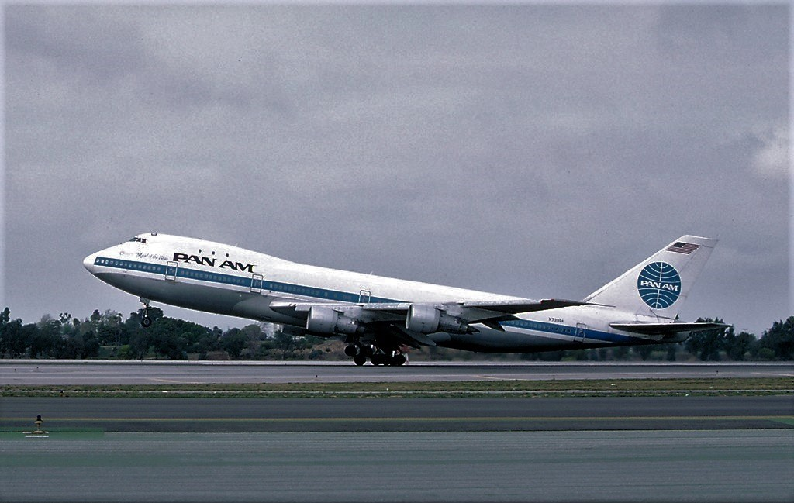

Priority Access
The Most Requested Case Files
Ghost Flights · August 2005
Ghost Flights
Intensity: Harrowing ● 9/10
Helios 522: The Ghost Flight
A pressurization fault put everyone aboard to sleep, and the 737 kept flying itself for nearly three hours with nobody conscious at the controls, until a lone flight attendant made it to the flight deck.
Open Full Case File
Disasters · March 1977
Disasters
Intensity: Harrowing ● 10/10
Tenerife: The Day Two Jumbos Collided
Two Boeing 747s ended up on the same fog-bound runway at the same time. 583 people died without either aircraft ever leaving the ground, still the deadliest accident in aviation history.
Open Full Case File
Photo: Ted Quackenbush via Wikimedia Commons, GFDL
Acts Of Terror · December 1988
Terror
Intensity: Harrowing ● 9/10
Pan Am 103: The Night Lockerbie Burned
A bomb hidden inside a radio cassette player exploded aboard Pan Am Flight 103 over Lockerbie, killing all 259 aboard and 11 more on the ground. The case is still active today.
Open Full Case File